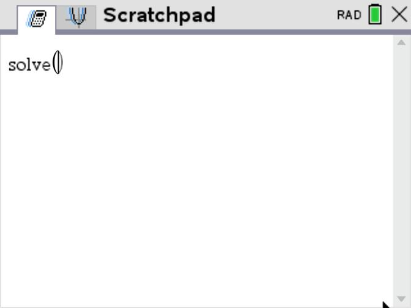
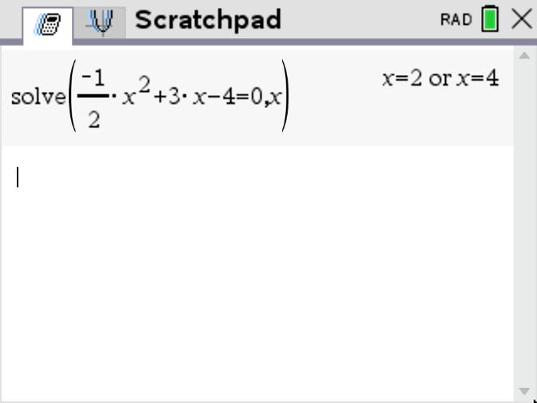

Nullstellen bestimmen
Bestimme die Nullstellen von f(x) = - \frac{1}{2} x^2 + 3x - 4.
Tippe solve( oder b 3 1

Tippe die Gleichung mit =0 ein und dahinter
Komma und Variable x.

Lösung: x_1 = 2,\ x_2 = 4